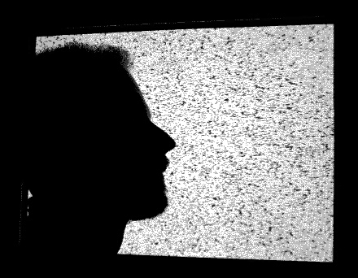

Inner World of Distracted Soul

Странник. С 2025 года выращиваю цифровое пространство для создания аудиовизуальных проектов и связывания резонансов.

Странник. С 2025 года выращиваю цифровое пространство для создания аудиовизуальных проектов и связывания резонансов.